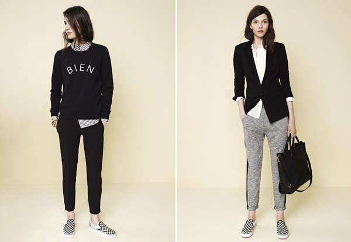

Fall Casual
For a detailed back to school lineup, I mixed a business casual vibe with a noteworthy autumn feel. While keeping the hemlines and silhouettes on the demure side, I played with rich hues, contrasting textures, and playful prints to create your classroom style.
Liven up this neutral fit with a color block handbag, gold tone black fringe necklace, a minimalist plated wrist cuff, and gold geometric linear earrings. A deep plum lip and a neutral lid cap off this peplum ensemble.
Liven up this neutral fit with a color block handbag, gold tone black fringe necklace, a minimalist plated wrist cuff, and gold geometric linear earrings. A deep plum lip and a neutral lid cap off this peplum ensemble.